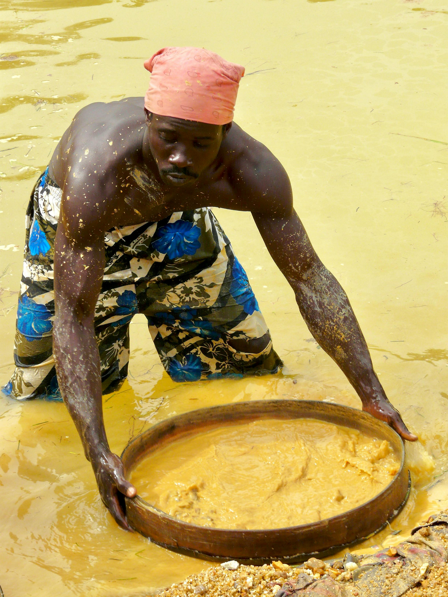
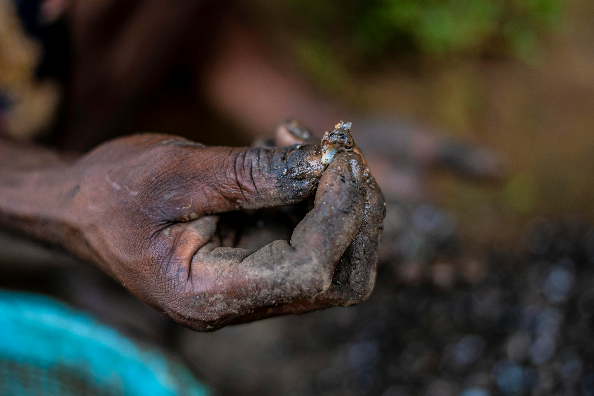

Consciência GlobalEntre pessoas, territórios e direitos
Minerais de Sangue e Trabalho Infantil na África
O que são “minerais de sangue”?
“Minerais de sangue” são recursos naturais extraídos em áreas de conflito, cuja exploração é usada para financiar guerras, milícias e grupos armados. A venda desses minerais alimenta a violência, prolonga conflitos e gera graves violações de direitos humanos.
Os exemplos mais conhecidos são:
Diamantes: historicamente associados a guerras civis, como em Serra Leoa.
Coltan: minério essencial para a fabricação de celulares, computadores e outros dispositivos eletrônicos, muito explorado na República Democrática do Congo (RDC).
Galeria documental sobre mineração em áreas de conflitos
Conflict Minerals - Image Journeys
Projeto fotodocumental sobre mineração e conflitos armados na África.
Grupos armados controlam regiões ricas em minerais e obrigam a população local a trabalhar na extração. O dinheiro obtido com a venda ilegal desses recursos é usado para:
Comprar armas
Manter milícias
Sustentar disputas territoriais
Esse ciclo cria uma relação direta entre consumo global e violência local.
Trabalho infantil na mineração
Em muitas regiões africanas, especialmente na RDC, crianças trabalham em minas em condições extremamente perigosas. As causas incluem:
Pobreza extrema
Falta de acesso à educação
Ausência do Estado
Exploração por empresas ou intermediários ilegais
As crianças realizam tarefas como:
Escavar túneis
Carregar sacos pesados de minério
Trabalhar sem equipamentos de proteção
Condições precárias de trabalho
Os trabalhadores das minas enfrentam:
Jornadas longas e exaustivas
Salários muito baixos
Risco constante de desabamentos
Exposição a substâncias tóxicas
Falta de direitos trabalhistas e assistência médica
Essas condições causam doenças, acidentes e mortes, além de perpetuar a pobreza.

Foto: Homem minerando diamantes com peneira em corpo d’água —
Pexels
Impactos sociais e humanitários
Violação de direitos humanos
Manutenção do ciclo de pobreza
Destruição de comunidades locais
Crescimento da instabilidade política
Dependência econômica da mineração informal
Tentativas de solução
Certificação de origem (ex.: Processo de Kimberley para diamantes)
Pressão internacional sobre empresas
Leis de rastreabilidade de minerais
Campanhas por consumo consciente
Investimentos em educação e alternativas econômicas
Conclusão
Apesar de serem essenciais para a economia global, minerais como diamantes e coltan carregam um alto custo humano. A geopolítica dos recursos africanos revela como desigualdade, exploração e interesses internacionais se conectam, tornando o consumo global parte desse problema.

Foto: Mãos de um trabalhador classificando minerais naturais —
Pexels
LEIA MAIS:
Quer conhecer outros temas relacionados à África? Deixe seu email!